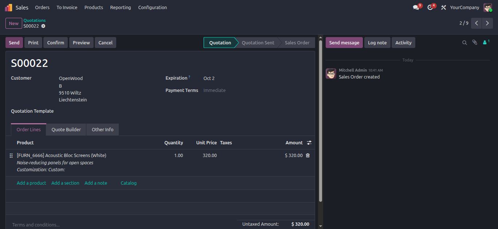
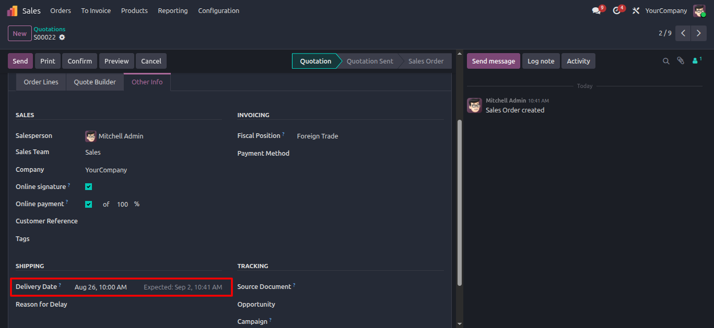
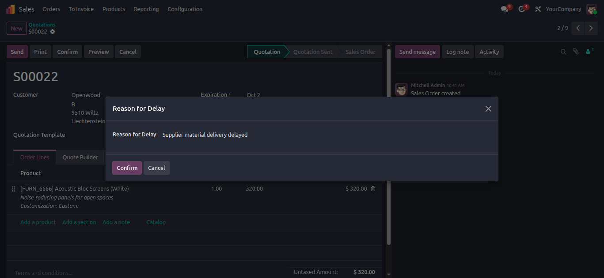
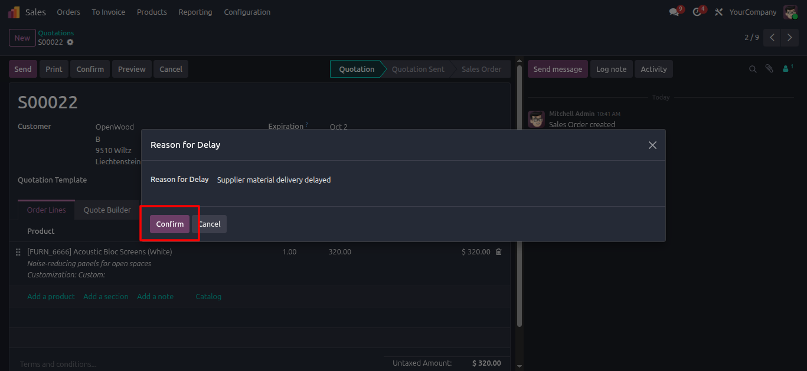
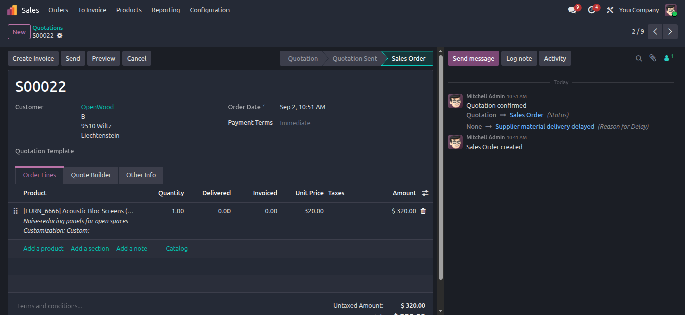
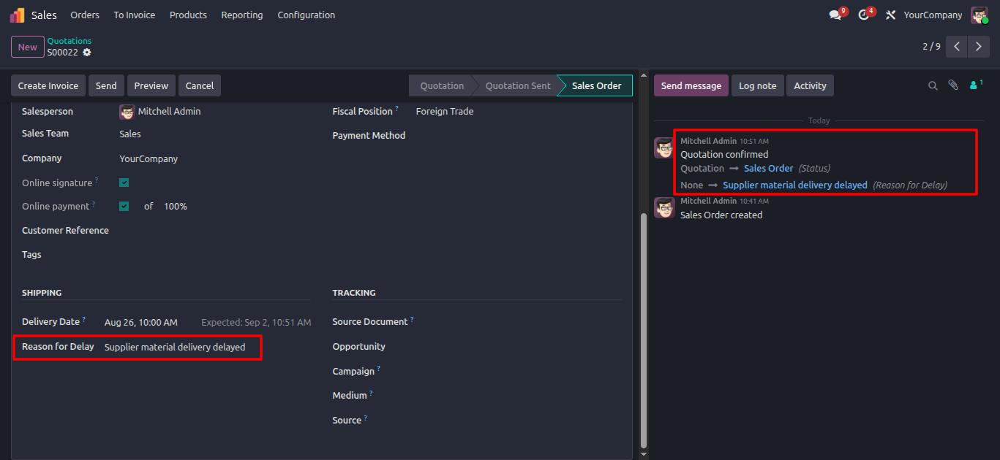

Sales Delivery Delay Reason Tracker
Incipient Enterprise SuiteSales Delivery Delay Reason Tracker
Eliminate unexplained sales fulfillment delays by automatically intercepting order confirmations past commitment dates and prompting sales reps for mandatory delay rationale.
Need Setup Assistance?
Free pre-sales consultation and lifetime support for every installation.
Contact Technical SupportBuilt for Operational Fulfillment Transparency
Automate delay tracking and mandate operational accountability
Commitment Guard
Auto InterceptAutomatically evaluates commitment date against current date upon order confirmation to intercept overdue delivery commitments.
Interactive Wizard
Mandatory RationalePrompts users with a popup wizard (`sale.delay.reason.wizard`) requiring explicit delay justification before confirming the sale order.
Chatter Audit Feed
Tracked FieldStores the captured delay reason directly on `sale.order` with chatter field tracking (`tracking=True`) for executive auditing.
The Business Transformation
How Sales Delivery Delay Reason Tracker enforces operational accountability
Unmonitored Delay Risks
- ✕ Sales teams confirm orders past commitment date without recording underlying root causes.
- ✕ No audit trail or historical record explaining operational bottlenecks during fulfillment.
- ✕ Sales Managers lack visibility into why fulfillment dates are routinely missed.
Automated Rationale Capture
- ✓ Automated commitment date evaluation forces users to provide delay reasons before confirmation.
- ✓ Captured delay reasons are permanently logged on the order form and logged to chatter feed.
- ✓ Enforces operational transparency across sales, inventory, and executive management.
Comprehensive Feature Suite
12 Core capabilities engineered for sales fulfillment delay tracking
Commitment Date Intercept
Automatically compares quotation commitment date against current date during order confirmation.
Interactive Prompt Wizard
Launches a modal wizard (`sale.delay.reason.wizard`) requiring input when commitment date is overdue.
Chatter Field Tracking
Stores `reason_for_delay` with full chatter audit logging (`tracking=True`) for audit compliance.
Dedicated Form Integration
Displays Reason for Delay prominently on Sales Order form view for quick review by managers.
Automated Workflow Resume
Seamlessly resumes standard `action_confirm()` order processing once wizard submission is validated.
Delay Bottleneck Reporting
Filter and group sales orders by delay reasons to identify common supply chain or vendor bottlenecks.
Multi-Company Support
Operates independently across multi-company sales setups without cross-company data leakage.
Zero Performance Impact
Lightweight ORM extension ensures zero performance degradation during sales order processing.
Clean Native Integration
Integrates cleanly into core `sale.order` model without overwriting standard Odoo views.
Granular Security Groups
Uses standard Odoo ACL security permissions for wizard access control.
Executive Chatter Digest
Allows Sales Managers to track delay rationale directly from chatter updates and email digests.
Odoo 19.0 Certified
Built specifically for Odoo 19.0 Community, Enterprise, and Odoo.sh deployments.
Complete Operational Workflow & Use Cases
End-to-end visual breakdown of Commitment Date Intercepts, Wizard Prompts & Chatter Logging
Sales Quotation Creation & Product Selection
Create a standard Sales Quotation in Odoo, select the customer, and add order line items.
Builds the initial sales agreement before evaluating delivery timelines.

Past Commitment Date Configuration
Navigate to the 'Other Info' tab and specify a commitment or delivery date earlier than today.
Configures an overdue commitment scenario to trigger the delay evaluation engine upon confirmation.

Automated Intercept & Reason for Delay Wizard
Clicking 'Confirm' automatically interrupts standard order processing when the commitment date is past due.
An interactive popup window (`Reason for Delay`) displays instantly, requiring mandatory operational input.

Rationale Entry & Wizard Submission
The sales representative types explicit delay notes (e.g. "Supplier material delivery delayed").
Clicking 'Confirm' validates the required rationale and resumes order confirmation.

Form Field Update & Sales Order Confirmation
The captured delay reason is saved into the `reason_for_delay` field on the order header.
The quotation updates to 'Sales Order' state with permanent delay rationale stored for management review.

Chatter Feed Audit Log & Tracked Record
A permanent audit entry recording the delay reason and user timestamp is logged to Chatter.
Ensures complete auditability for sales managers and operational fulfillment teams.

Frequently Asked Questions
Click any question below to expand or collapse details